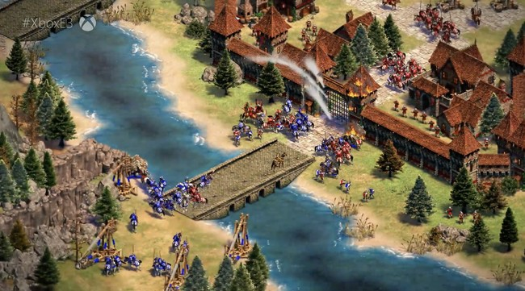
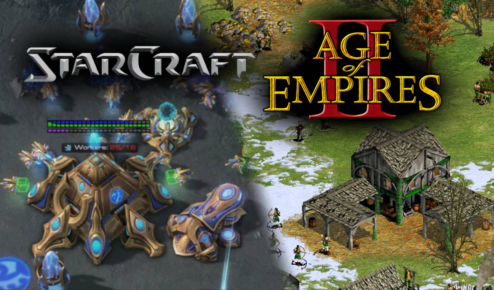

Juego de aventura o estrategia
Los videojuegos de aventura o estrategia permiten explorar mundos, resolver problemas y completar diferentes misiones, son aquellos donde ganar depende más de pensar bien que de tener buenos reflejos. El jugador debe organizar sus recursos, anticiparse a su rival y decidir cada movimiento con cuidado. Por eso muchas veces se compara con el ajedrez, pero en versión digital.
- Exploración
- Misiones
- Historia
- Personajes


HISTORIA
Los juegos de estrategia vienen de los juegos de mesa antiguos, como el ajedrez, y de los juegos de guerra con miniaturas. Cuando aparecieron las computadoras, esas ideas pasaron a la pantalla. En 1991 salió Civilization, que popularizó la estrategia por turnos, y en 1992 llegó Dune II, considerado un punto clave para la estrategia en tiempo real. Después se sumaron StarCraft y Age of Empires, y hoy el género también existe en celulares.
¿Qué haces en una partida?
- Recolectar recursos como comida, madera o piedra.
- Construir edificios para producir más y avanzar.
- Entrenar unidades y formar un ejército.
- Explorar el mapa para encontrar al rival.
- Atacar o defender hasta cumplir el objetivo.